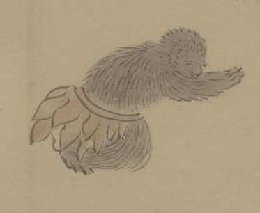

獣の化物。猿のように見える。全身が黒い毛で覆われており、木の葉を重ねたような形の腰蓑のようなものをつけている。ひざまずき、両手をあわせて、頭を下げている。
出典：親書誌：U426_nichibunken_0150：付喪神絵詞；ツクモガミエコトバ／日付：2010／資源識別子：U426_nichibunken_0150_0099_0000
Copyright (c)2010- International Research Center for Japanese Studies, Kyoto, Japan. All rights reserved.